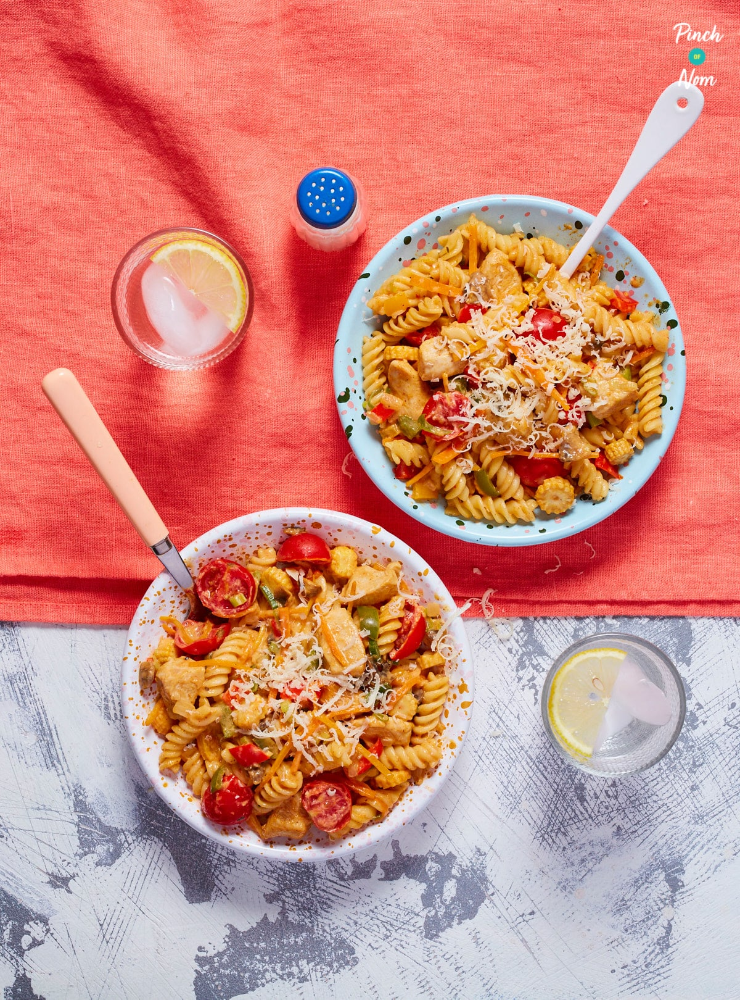

Cajun Chicken Pasta

Description
We’ve packed as much veg as we can into this Creamy Cajun Chicken Pasta to help make it super filling and healthy. You can use whichever veg you want, but we’ve chosen to include peppers, carrots, onions, spring onions, mushrooms, baby corn and cherry tomatoes. You can also substitute the branded Scwartz Season All to a different brand or supermarket own, if you like.
Broccoli, courgette, spinach, kale and even some chillies would also work really well in this Creamy Cajun Chicken Pasta so feel free to get creative!
Ingredients
- 2 chicken breasts diced (Approx 120g each)
- 250 g fusilli pasta or whichever pasta shape you prefer
- 1 onion diced
- 4 spring onions chopped
- 2 1/2 red, yellow or green bell peppers deseeded and diced
- 8 button mushrooms sliced
- 2 carrots cut into thin strips
- 1 handful cherry tomatoes halved
- handful baby corn sliced
- 2 eggs
- 150g quark
- 10 g grated cheese
- 60 g reduced fat spreadable cheese
- 1 tsp Schwartz Season All spice mix
- 1 tsp paprika
- 1 tbsp Cajun seasoning
- 1 chicken stock cube made up with 250ml of boiling water
- low calorie cooking spray
Steps
- Cook pasta as per instructions on the pack with a little salt.
- Cook the chicken and onions in a few sprays of low calorie cooking spray over a medium heat for 3-5 minutes until the chicken starts to brown and the onions start to soften.
- Mix the cajun seasoning, paprika and Season All together, then add half of it to the pan.
- Stir and cook for a minute or so.
- Add the mushrooms, peppers and carrot. Cook for another minute.
- Add the cherry tomatoes and the chicken stock. Then add the remaining seasoning. Stir well.
- Cook for about 5 minutes, then add the rest of the vegetables. Stir and cook for another 5 minutes.
- In a large bowl (the bowl needs to be big enough to hold the pasta) mix the quark, spreadable cheese and eggs together until it is smooth, then add the chicken and veg mix. Stir well.
- Add the cooked pasta, then serve with some freshly ground black pepper and some grated cheese.